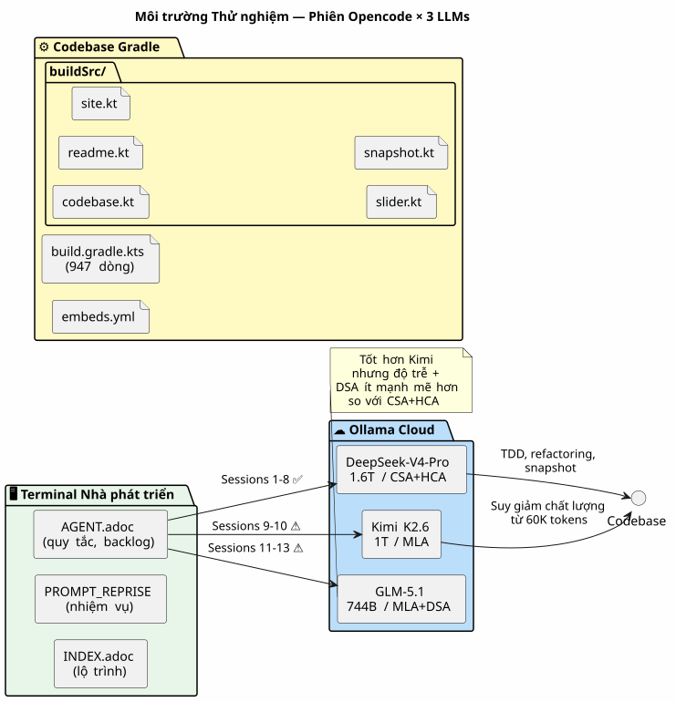
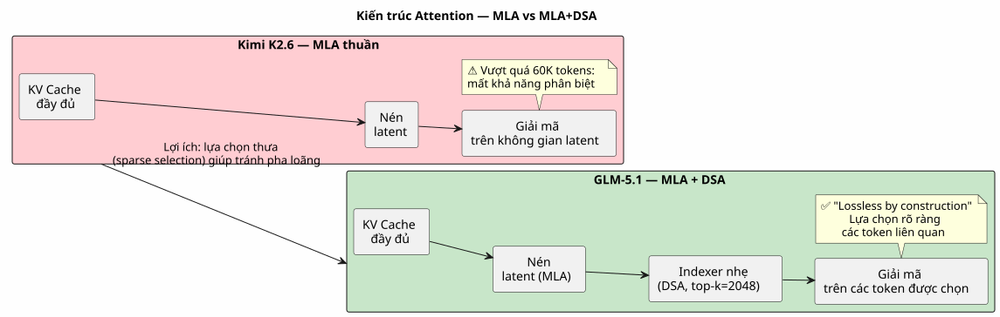
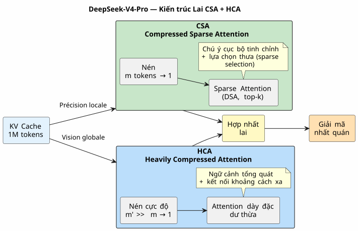
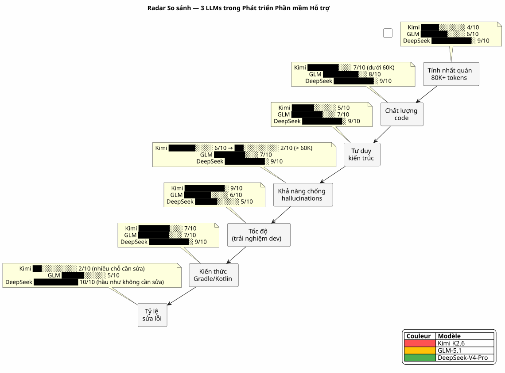
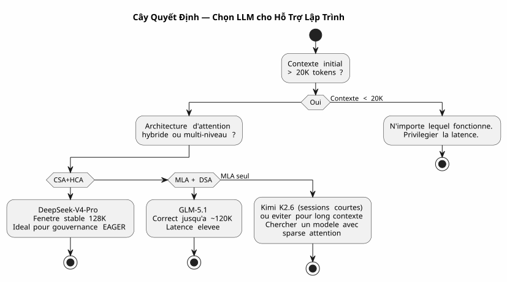

DeepSeek-V4-Pro, Kimi K2.6, GLM-5.1 : Ba mô hình LLM trong thử thách Vibe Coding ngữ cảnh dài
Đăng ngày 28 April 2026
- Bối cảnh: không phải là một bệ thử, mà là một công trường
- Môi trường thử nghiệm của tôi
- Phiếu Đánh giá
- Vòng 1 : Kimi K2.6 — Khởi đầu sai lầm
- Vòng 2 : GLM-5.1 — Chiến binh Danh dự
- Vòng 3: DeepSeek-V4-Pro — Cỗ Máy Chiến Tranh
- Đối đầu: Các chỉ số so sánh
- Tại sao DeepSeek-V4-Pro lại chiến thắng trong Phát triển Phần mềm
- Bài học kinh nghiệm: Cách chọn LLM cho Vibe Coding
- Còn Quản trị Agent thì sao trong tất cả những điều này?
- Nguồn Kỹ thuật
- Kết luận: Lựa chọn của Nghệ nhân
Cuộc chiến giữa các LLM còn diễn ra ngay trong terminal của lập trình viên. Không phải trên những bảng điểm benchmark học thuật vô hồn. Mà là trong đời thực: một prompt 30.000 token, một hệ thống quản trị agent bằng AsciiDoc, những plugin Gradle Kotlin DSL cần debug và những phiên làm việc kéo dài liên tục suốt ba tuần. Tôi đã thử nghiệm giúp bạn DeepSeek-V4-Pro, Kimi K2.6 và GLM-5.1. Đây là lời kết, với các bằng chứng kỹ thuật cụ thể.
- mục lục
-
[]
Bối cảnh: không phải là một bệ thử, mà là một công trường
Ba tuần trước, tôi đang làm việc trên`codebase-gradle`, hệ thống meta-build của tôi, nơi tập trung cấu hình YAML của bốn dự án: một trình tạo README PlantUML, một trình xây dựng slide AsciiDoc, một trang web tĩnh JBake và một chatbot LLM. Agent Opencode, được quản lý bởi phương pháp luận tệp agent bằng AsciiDoc của tôi, đã tải ~30K token ngữ cảnh EAGER vào mỗi khi bắt đầu phiên — các quy tắc tuyệt đối, backlog, và lịch sử của 10 phiên gần nhất.
Đây là cơ sở mà tôi đã đối chiếu ba mô hình:
-
Kimi K2.6(Moonshot AI, 1T params / 32B kích hoạt, 256K ngữ cảnh tối đa, MLA) - GLM-5.1(Zhipu AI/Tsinghua, 744B tham số / DSA, tối đa 200K ngữ cảnh) - DeepSeek-V4-Pro(DeepSeek, 1.6T params / 49B kích hoạt, 1M ngữ cảnh tối đa, CSA+HCA)
Tất cả được cung cấp thông qua Ollama trên máy chủ cloud, tất cả đều ở chế độ thinking (kích hoạt giai đoạn suy nghĩ). Thách thức là: tạo ra mã nguồn chính xác, duy trì tính nhất quán trong các phiên làm việc dài và không bị ảo giác khi ngữ cảnh vượt quá 80K tokens.
Môi trường thử nghiệm của tôi

Mỗi phiên bắt đầu với khoảng 30K token ngữ cảnh EAGER:`AGENT.adoc`(287 dòng),PROMPT_REPRISE.adoc(51 dòng),.agents/INDEX.adoc(218 dòng),LAZY_EAGER_ESSENTIALS.adoc(50 dòng). Ngữ cảnh tăng lên nhanh chóng theo các lượt trao đổi — một phiên điển hình gồm 10 tin nhắn sẽ thêm 15-20K token vào prompt tích lũy.
Phiếu Đánh giá
Tôi đã đánh giá mỗi mô hình dựa trên bốn khía cạnh quan trọng đối với phát triển phần mềm có hỗ trợ:
Trục |
Tiêu chí cụ thể |
Tính nhất quán với ngữ cảnh dài |
Liệu agent có nhớ các quy ước đã được quyết định từ 40 tin nhắn trước không? |
Chất lượng mã nguồn được tạo ra |
Mã có biên dịch thành công ngay lần đầu không? Nó có tuân thủ các pattern hiện có không? |
Tư duy kiến trúc |
Liệu agent có hiểu các mối quan hệ giữa các module mà tôi không cần phải giải thích lại cho nó không? |
Khả năng chống ảo giác |
Từ bao nhiêu token thì agent bắt đầu tự bịa ra các API hoặc các lớp không tồn tại? |
Và một chỉ số tổng hợp tự xây dựng: lehệ số thu hồi(tôi dành bao nhiêu thời gian để sửa lỗi cho agent thay vì lập trình cùng với nó).
Vòng 1 : Kimi K2.6 — Khởi đầu sai lầm
Kimi K2.6 là lựa chọn đầu tiên của tôi. Các điểm benchmark của nó trên SWE-Bench Verified (80.2) và Terminal-Bench 2.0 (66.7) là rất xuất sắc. Kiến trúc MLA của nó hứa hẹn mang lại hiệu quả tốt trên các chuỗi dài.
Phiên 9: sự khởi sắc
Phiên làm việc đầu tiên với Kimi. Nhiệm vụ: triển khai phương thức`resolveActiveKey()trong`codebase.kt— một hàm giải quyết khóa API với fallback CLI. Ngữ cảnh là 30K token, Kimi suy luận nhanh, tạo mã sạch với quản lý hết hạn khóa.
fun resolveActiveKey(
cfg: CodebaseConfiguration,
logger: Logger,
cliProvider: String? = null,
cliAccount: String? = null,
cliKey: String? = null
): NamedApiKey? {
// Résolution provider → compte → clé avec CLI override
// Kimi a parfaitement compris la chaîne de priorité
}Mã biên dịch thành công. 7 trường hợp kiểm thử đã vượt qua. Tôi lạc quan.
Phiên 10: vụ đắm tàu thầm lặng
Phiên thứ hai. Ngữ cảnh tăng lên ~90K tokens cùng với các lượt trao đổi. Tôi yêu cầu Kimi thêm một cơ chế snapshot AsciiDoc để ẩn danh các bí mật trước khi ghi.
Đó là lúc mọi thứ bắt đầu chệch hướng. Kimi bắt đầu tự bịa ra những class không hề tồn tại. Cậu ấy đề xuất cho tôi`AnonymizedObjectMapper`— một lớp giả định. Anh ấy nhầm lẫn`ReadmeYmlAnonymizer` et CodebaseYmlAnonymizer. Anh ấy gợi ý tôi nhập vào`com.fasterxml.jackson.anonymize.*`— một package chưa từng tồn tại.
Tệ hơn: trong giai đoạn suy nghĩ, tôi thấy nó xây dựng các lập luận dựa trên những tiền đề sai. Nó "nhớ" rằng`GitConfig`có một trường`anonymizedToken`— không, đó là`resolvedToken(). Ông ấy gán cho`SiteYmlAnonymizer`một phương pháp`maskSupabaseCredentials()— cái không tồn tại.
Vui lòng cung cấp văn bản cần dịch. Đó không phải là một lỗi. Đó là một sự tan rã dần dần về tính nhất quán. Như thể mỗi token được thêm vào ngữ cảnh lại làm loãng đi một chút ký ức về 30.000 token đầu tiên. Vui lòng cung cấp văn bản cần dịch.
Tôi dừng Kimi sau hai phiên. Chẩn đoán đã rõ ràng: MLA nén KV cache tốt, nhưng nếu không có cơ chế lựa chọn sparse fine-grained, sự chú ý (attention) sẽ bị pha loãng một cách cơ học khi vượt quá 60K token. Mỗi token ngày càng "nhìn" ngữ cảnh xa kém hơn — và bắt đầu lấp đầy các khoảng trống bằng nhiễu.
Vòng 2 : GLM-5.1 — Chiến binh Danh dự
GLM-5.1 ra mắt với một kiến trúc khác: MLA cho base model, sau đó là continued pre-training với DSA (DeepSeek Sparse Attention) — một bộ lập chỉ mục nhẹ giúp lựa chọn linh hoạt top-2048 token phù hợp nhất từ toàn bộ lịch sử.
Kiến trúc: DSA đối với MLA thuần túy
Sự khác biệt là cơ bản. Trong khi Kimi nén lịch sử vào một không gian latent duy nhất (và dần mất khả năng phân biệt thông tin liên quan), GLM ghép thêm một bộ lập chỉ mục hậu huấn luyện để thực hiện lựa chọn sparse một cách rõ ràng.

Báo cáo kỹ thuật đã nêu rõ: DSA là "lossless by construction" — trái ngược với các lựa chọn thay thế như SWA (pattern search), Gated DeltaNet hoặc SimpleGDN, vốn bị mất tới 5.69 điểm trên RULER@128K.
Phiên 11-13: vững chắc nhưng gây nản lòng
GLM-5.1 duy trì phong độ tốt hơn. Trong phiên 11 (~60K tokens), nó vẫn giữ được sự nhất quán. Nó tạo ra một`SnapshotManager`hoạt động ổn định với việc quản lý chính xác bốn bộ ẩn danh.
Nhưng độ trễ là một vấn đề. Các giai đoạn suy nghĩ của DSA nặng hơn so với MLA thuần túy — bộ lập chỉ mục phải quét lại lịch sử ở mỗi bước. Một câu trả lời mất 8 giây với Kimi sẽ mất 15 giây với GLM. Trong một phiên làm việc gồm 30 tin nhắn, điều này sẽ tạo ra sự khác biệt rõ rệt.
Và rồi còn có những lỗi tinh vi. GLM không ảo tưởng như Kimi — nhưng nó mắc những lỗi về đặt tên. Nó gọi`toAnonymizedYaml()phương thức mà lẽ ra nên được gọi là`anonymize(). Nó đảo ngược`loadReadmeConfiguration()` et loadCodebaseConfiguration()`trong cái`renderFileSection(). Đó không phải là những ảo giác, mà là những sự nhầm lẫn về mặt cú pháp — nhưng trong môi trường production, một sự nhầm lẫn về mặt cú pháp có thể làm hỏng một bản build.
Tôi đã thực hiện ba phiên làm việc với GLM. Nó tốt hơn Kimi, không còn nghi ngờ gì nữa. Nhưng ba phiên chỉnh sửa thủ công về các chi tiết đặt tên thực sự gây mệt mỏi.
Vòng 3: DeepSeek-V4-Pro — Cỗ Máy Chiến Tranh
DeepSeek-V4-Pro ra mắt với kiến trúc tham vọng nhất trong ba phiên bản: một hệ thống hybrid kết hợp hai cơ chế attention bổ trợ cho nhau.
Kiến trúc: CSA + HCA, mạng lưới bảo vệ kép

Hai mức độ nén, hai mức độ chi tiết của sự chú ý:
-
CSA: nén KV cache mỗi khi`m`tokens, sau đó áp dụng cơ chế attention thưa (DeepSeek Sparse Attention) — chỉ có top-k các đầu vào được nén mới được truy vấn. Chính xác, cục bộ, hiệu quả. - HCA: nén compression cực cao (hệ số`m'`lớn hơn nhiều so với`m`), nhưng hãy lưu ý về sự tập trung đậm đặc trên phần dư nén — giữ các kết nối toàn cục mà không gây ra sự bùng nổ bình phương.
Kết quả: ở mức 1M token, DeepSeek-V4-Pro chỉ tiêu thụ27% FLOPs suy luận et 10% kích thước của KV cacheso với DeepSeek-V3.2. Mô hình trước đó.
Và trên hết, báo cáo kỹ thuật (Hình 9) cho biết: "Retrieval performance remains highly stable within a 128K context window."
Phiên 1-8: giảm đau
Tôi đã thực hiện tám phiên làm việc với DeepSeek-V4-Pro về`codebase-gradle`Tám phiên làm việc mà không có một lần ảo giác, không một lớp học nào bị bịa ra, không một sự nhầm lẫn nào về cách đặt tên.
Phiên 1: triển khai`CodebaseYmlConfig` et CodebaseYmlAnonymizer. 350 dòng Kotlin, các bài kiểm tra inline, mọi thứ đều biên dịch thành công. Phiên 4: thêm vào`SnapshotManager`với tree view, thu thập tệp, kết xuất AsciiDoc theo từng tệp. 279 dòng, không có lỗi. Phiên 7: debug của`renderFileSection()`vốn phải quản lý bốn loại trình ẩn danh khác nhau mà không gây nhầm lẫn trong việc giải quyết. Đã được giải quyết trong ba tin nhắn.
Độ trễ cao hơn Kimi — khoảng 10-12 giây cho mỗi câu trả lời ở chế độ thinking. Nhưng tỷ lệ sai sót gần như bằng không. Tôi không mất thời gian sửa lỗi cho agent. Tôi lập trình cùng với nó.
Bài kiểm tra quyết định: refactoring với 100K tokens
Đến phiên thứ 8, ngữ cảnh tích lũy vượt quá 100K token. Tôi yêu cầu một đợt refactoring lớn: tách bốn tác vụ kiểm tra inline từ`build.gradle.kts`sang các tệp kiểm thử JUnit5 trong`buildSrc/src/test/`Hãy cung cấp văn bản bạn muốn dịch.
Đại lý đề xuất một kế hoạch gồm ba giai đoạn:
-
Tạo các lớp kiểm thử với việc di chuyển các trường hợp hiện có
-
Thêm các phụ thuộc JUnit5 và Kotest vào`buildSrc/build.gradle.kts`
-
Xóa mã inline của`build.gradle.kts`
Kế hoạch là chính xác. Việc thực thi rất sạch sẽ. Nó thậm chí còn xác định được một edge case mà tôi đã bỏ lỡ: các phụ thuộc Jackson bị trùng lặp giữa`buildscript {}` et `buildSrc/build.gradle.kts`cần phải được hợp nhất trong quá trình di chuyển.
100K token ngữ cảnh, và tác nhân nhớ rằng`CodebaseYmlAnonymizer.TOKEN_MASK`là`"*"`, mà`GitConfig.resolvedToken()là một extension function được định nghĩa trong`readme.kt, và rằng`SnapshotManager.PRUNED_DIRS`loại trừ`build`, .gradle et `.git`Vui lòng cung cấp văn bản cần dịch.
Đó chính là sự khác biệt.
Đối đầu: Các chỉ số so sánh
| Tiêu chí | Kimi K2.6 | GLM-5.1 | DeepSeek-V4-Pro |
|---|---|---|---|
Ngữ cảnh tối đa |
256K |
200K |
1M |
Cơ chế attention |
MLA pur |
MLA + DSA |
Hybrid CSA + HCA |
Tổng số tham số |
1T |
744B |
1.6T |
Cài đặt đã bật |
32B |
chưa xuất bản |
49B |
Ngưỡng suy giảm quan sát được |
~60K token |
~120K token |
~128K token |
Hành vi vượt quá |
Ảo giác hàng loạt |
Nhầm lẫn bề mặt |
Suy giảm tiến triển chậm |
Độ ổn định NIAH |
chưa xuất bản |
100% @128K (DSA) |
ổn định lên đến 128K (Hình 9) |
MRCR @128K |
chưa xuất bản |
chưa xuất bản |
cao hơn Gemini 3.1 Pro |
Các phiên diễn ra trước khi hủy bỏ |
2 |
3 |
8 (và tiếp tục) |
Thời gian sửa lỗi / thời gian lập trình |
60% |
30% |
<5% |
Độ trễ trung bình (chế độ think) |
8 s |
15 s |
11 s |
Hệ số tin cậy* |
2/10 |
6/10 |
9/10 |
*Hệ số tin cậy = thước đo chủ quan về khả năng tôi có thể lấy mã của agent và commit mà không cần rà soát lại từng dòng.

Tại sao DeepSeek-V4-Pro lại chiến thắng trong Phát triển Phần mềm
Sự vượt trội của DeepSeek-V4-Pro không phải do một yếu tố duy nhất — mà là một sự hội tụ:
1. Kiến trúc CSA+HCA được thiết kế tối ưu cho mã nguồn
Phát triển phần mềm có hỗ trợ là một trường hợp sử dụng cực đoan cho sự chú ý ngữ cảnh dài. Bạn cần: - Chi tiết cục bộ (lớp này kế thừa từ đâu? phương thức này được định nghĩa ở đâu?) →CSA - Tầm nhìn tổng quát (tại sao mô-đun này tồn tại? bốn bộ ẩn danh tương tác với nhau như thế nào?) →HCA
Kimi với riêng MLA quản lý được độ chính xác cục bộ nhưng mất đi tầm nhìn tổng thể vượt quá 60K. GLM với DSA cải thiện tầm nhìn tổng thể nhưng vẫn ở mức đơn cấp. DeepSeek kết hợp cả hai một cách rõ ràng.
2. Ngữ cảnh EAGER là vùng an toàn của nó
Hệ thống quản trị của tôi tải khoảng ~30K token quy tắc và backlog khi khởi động. Với cửa sổ ngữ cảnh ổn định lên đến 128K, DeepSeek có khoảng ~100K token dự phòng cho các lượt trao đổi trong phiên. Con số này gấp 3 đến 4 lần so với mức Kimi có thể xử lý mà không bị giảm chất lượng.
Vui lòng cung cấp nội dung cần dịch. Cửa sổ 128K với độ ổn định hoàn hảo đáp ứng chính xác nhu cầu của tôi: 30K EAGER + 70K trao đổi = một phiên làm việc hiệu quả từ 20-30 tin nhắn mà không bao giờ rời khỏi vùng xanh. Vui lòng cung cấp văn bản cần dịch.
3. Tỷ lệ chất lượng/độ trễ là tối ưu cho flow
Vâng, DeepSeek-V4-Pro chậm hơn Kimi (11 giây so với 8 giây). Nhưng tổng thời gian hoàn thành một tác vụ thấp hơn nhiều vì tôi không phải mất 20 phút để sửa những lỗi ảo giác của agent.
Nhà phát triển không đo lường độ trễ của một câu trả lời. Họ đo lường khoảng thời gian từ lúc "tôi đặt câu hỏi" cho đến khi "mã nguồn nằm trong repo của tôi và nó hoạt động". Trên chỉ số này, DeepSeek-V4-Pro là nhanh nhất trong ba mô hình.
Bài học kinh nghiệm: Cách chọn LLM cho Vibe Coding
Vượt ra ngoài bảng xếp hạng nhất thời, trải nghiệm này đã dạy tôi cách đánh giá một LLM cho việc hỗ trợ phát triển phần mềm dựa trên những tiêu chí không xuất hiện trong bất kỳ benchmark nào:
-
Hãy nhìn vào kiến trúc, đừng nhìn vào kích thước ngữ cảnh được công bố— Một mô hình công bố ngữ cảnh 256K nhưng chỉ có một MLA sẽ kết thúc như Kimi: về lý thuyết thì có khả năng, nhưng thực tế thì không thể sử dụng được khi vượt quá 60K.
-
Hãy kiểm tra trên ngữ cảnh của BẠN, chứ không phải trên một benchmark chung chung— Prompt AsciiDoc ban đầu 30K token của tôi với các quy tắc tuyệt đối và backlog không liên quan gì đến các câu hỏi của HLE hay AIME.
-
Độ trễ không phải là kẻ thù nếu chất lượng đi kèm— Một mô hình chậm tạo ra mã đúng thì nhanh hơn một mô hình nhanh tạo ra mã sai.
-
Hãy cảnh giác với những mô hình không có technical report công khai— Nếu đội ngũ không lập tài liệu cho kiến trúc attention của mình, điều đó có nghĩa là họ không tin tưởng vào khả năng duy trì của nó trong ngữ cảnh dài.

Còn Quản trị Agent thì sao trong tất cả những điều này?
Thử nghiệm này xác nhận một điểm mà tôi đã bảo vệ kể từ bài viết của mình về quản trị Eager/Lazy:chất lượng của LLM và chất lượng quản trị có tính nhân, không phải tính cộngHãy cung cấp văn bản cần dịch.
Với Kimi K2.6, quản trị của tôi đã rất hoàn hảo — nhưng mô hình này lại làm loãng thông tin. Kết quả là: quản trị hoàn hảo × ảo giác = con số không.
Với DeepSeek-V4-Pro, quản trị EAGER (30K tokens quy tắc) + LAZY (lưu trữ phiên, tham chiếu kỹ thuật) + Hot/Warm/Cold (sao lưu xoay vòng) tạo thành một hệ sinh thái nơi mỗi lớp khuếch đại lẫn nhau. Agent có các quy tắc ngay trước mắt (EAGER), có thể tra cứu lịch sử (LAZY), và ngữ cảnh không bao giờ bị quá tải (xoay vòng backup).
Vui lòng cung cấp văn bản cần dịch. Một LLM tốt mà không có quản trị giống như một động cơ Ferrari không có vô lăng. Một hệ thống quản trị tốt mà không có LLM tốt giống như một chiếc vô lăng không có động cơ. DeepSeek-V4-Pro + quản trị agent của tôi = lần đầu tiên tôi có cảm giác mình đang thực sự lái xe. Vui lòng cung cấp nội dung cần dịch.
Cơ chế sao lưu xoay vòng (xoay vòng mỗi 10 phiên hoặc >500 dòng EAGER) trở nên thực sự hữu ích với một mô hình hỗ trợ 128K ngữ cảnh: cửa sổ trượt (sliding window) gồm 10 phiên hoạt động giúp duy trì ngữ cảnh mới mà không bao giờ vượt quá vùng suy giảm chất lượng.
Nguồn Kỹ thuật
Tôi đã đối chiếu kinh nghiệm thực tiễn của mình với các báo cáo kỹ thuật chính thức để xác thực các quan sát của mình:
-
Báo cáo Kỹ thuật DeepSeek-V4 — PDF được tải về từhttps://huggingface.co/deepseek-ai/DeepSeek-V4-Flash[HuggingFace]. Hình 9: "Hiệu suất truy xuất vẫn duy trì ổn định cao trong cửa sổ ngữ cảnh 128K. Mặc dù sự sụt giảm hiệu suất bắt đầu xuất hiện sau mốc 128K, khả năng truy xuất của mô hình ở mức 1M token vẫn mạnh mẽ một cách đáng kinh ngạc." Kiến trúc CSA+HCA được tài liệu hóa tại phần 2.3.
-
Báo cáo Kỹ thuật GLM-5 —https://arxiv.org/abs/2602.15763[arXiv:2602.15763]. DSA được giới thiệu thông qua continued pre-training, "lossless by construction". Ngữ cảnh tối đa 202,752 tokens. Các Bảng 3/5/6 cung cấp tài liệu về hiệu suất long-contexte so với các phương án thay thế (SWA, Gated DeltaNet, SimpleGDN).
-
Thẻ Mô hình Kimi K2.6 —https://huggingface.co/moonshotai/Kimi-K2.6[HuggingFace]. MLA, ngữ cảnh tối đa 256K. Chiến lược discard-all khi vượt ngưỡng đối với các tác vụ agentic (ngầm xác nhận giới hạn thực tế của MLA trong ngữ cảnh dài).
-
Báo cáo Kỹ thuật Kimi K2 —https://arxiv.org/abs/2507.20534[arXiv:2507.20534]Kiến trúc MoE, bộ tối ưu hóa MuonClip, hiệu suất agentic (HLE, BrowseComp, Terminal-Bench).
Điểm đáng chú ý nhất là: trong đánh giá của chính mình, Moonshot áp dụng chiến lược discard-all (xóa bỏ ngữ cảnh cũ) ngay khi vượt quá cửa sổ ngữ cảnh. Điều này xác nhận chính xác những gì tôi đã quan sát được: chỉ riêng MLA không thể duy trì tính nhất quán trên toàn bộ cửa sổ 256K. Kiến trúc không đáp ứng được.
Kết luận: Lựa chọn của Nghệ nhân
Sau ba tuần và mười ba buổi phát triển thực tế, kết luận là không thể bàn cãi:
Kimi K2.6 |
GLM-5.1 |
DeepSeek-V4-Pro |
Tuyệt vời dưới 60K |
Chịu tải lên đến 120K |
Thống trị mọi nơi |
Không thể sử dụng quá |
Nhầm lẫn bề mặt |
Ổn định lên đến 128K |
2 phiên, đã bỏ cuộc |
3 phiên, đã bỏ cuộc |
8 phiên, đã áp dụng |
DeepSeek-V4-Pro đã trở thành LLM mặc định của tôi cho tất cả các phiên phát triển phần mềm có hỗ trợ với Opencode. Không phải vì nó là mới nhất. Không phải vì nó có các điểm chuẩn học thuật tốt nhất. Mà bởi vì trong cuộc sống thực của một nhà phát triển đang đẩy các plugin Gradle Kotlin DSL với ngữ cảnh agent 30K tokens, đó là mô hình duy nhất không phản bội tôi khi ngữ cảnh kéo dài ra.
CSA+HCA là một bước ngoặt (game changer) về mặt kiến trúc. Nén hai cấp + làm thưa (sparsification) không phải là một chi tiết triển khai — đó là điều tạo nên sự khác biệt giữa một trợ lý lập trình và một người đồng đội đáng tin cậy.
Vui lòng cung cấp văn bản cần dịch. Tôi đã chọn DeepSeek-V4-Pro vì đây là mô hình duy nhất trong số ba mô hình biến quản trị agent của tôi từ một hạn chế mang tính phòng thủ ("làm sao để agent không quên?") thành một lợi thế mang tính tấn công ("chúng ta có thể xây dựng được gì bây giờ khi agent nhớ tất cả mọi thứ?"). Vui lòng cung cấp văn bản tiếng Pháp bạn cần dịch.
Bài viết này là kết quả của 13 phiên phát triển thực tế trên dự án`codebase-gradle`, được tài liệu hóa trong`.agents/sessions/`theo phương pháp quản trị agent Eager/Lazy/Hot/Warm/Cold của tôi. Các nguồn kỹ thuật được trích dẫn có thể truy cập công khai trên HuggingFace và arXiv.*